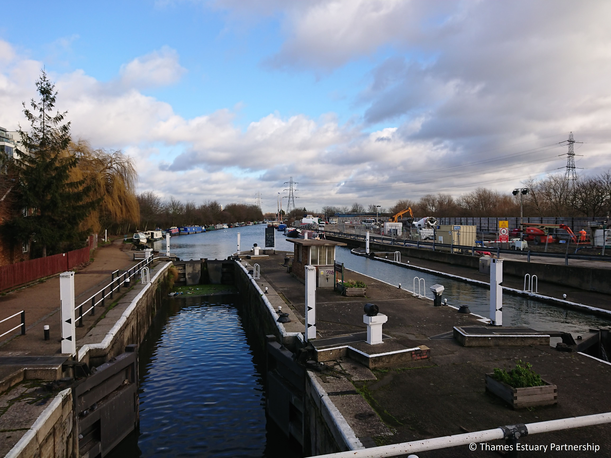
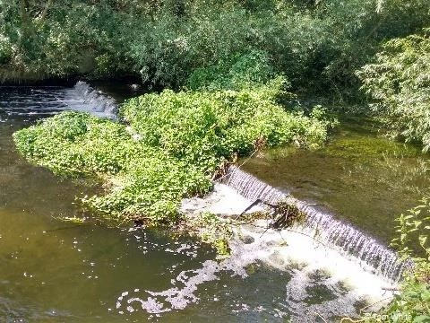
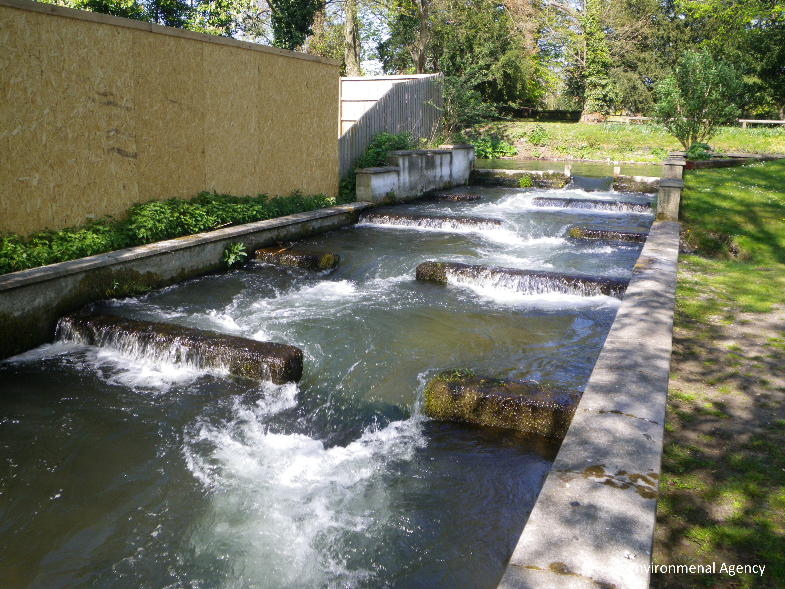

In the UK we have fundamentally changed the way our rivers work, straightening and deepening their channels to get water off the land as quickly as possible.
This has effectively turned them into water chutes, which benefited our agricultural and industrial industries by providing drainage and water transport corridors.
We have also built weirs and locks to control the water flow.
But this fragmentation has led to some major problems. A river is meant to meander across the landscape and have areas either side that can flood safely,
called floodplains. The meandering slows the waterflow, stopping flash floods and creating pockets of habitat for wildlife and plants. Floodplains allow
for natural drainage and create wetlands that combat pollution and create pockets of habitat that are very important for migratory fish. The lack of them
has contributed to the decline of some species, as have sluices and other barriers to swimming upstream. Diadromous fish, such as the European eel, bass,
sea lamprey and flounder, must be able to migrate between marine and freshwater habitats to reach their breeding, nursery and feeding grounds.
Various EU directives and national legislation require improvements to our rivers and, in turn, fish migration. Some great work has already been done
to ‘re-meander’ rivers, restore wetlands and reconnect floodplains. And technical solutions to man-made barriers – collectively known as “fish passes” – are
helping to recreate fishes’ natural migration routes. Although they vary in form and complexity, many enable fish to navigate barriers by swimming and leaping
up a series of low steps leading into the water on the other side.
Thames Estuary Partnership has been working on an exciting project called the 'Greater Thames Estuary Fish Migration Roadmap' /a and we need your help to gather data on barriers.
With the data collected will be able to identify entire migratory routes and create a road map of the ‘major highways’, ‘A-roads’ and ‘B-roads’ that the fish
would use if there were no barriers preventing them. As well as helping to prioritise where fish passes are needed, the completed road map will help to identify
opportunities for restoring habitat during work on sea or flood defences, river restoration and land development.
Lock
Weir
Fish pass

The interactive map below higlights the River Thames as the fish migration highway, and the tributaries as the A and B roads within Greater London.
By clicking/tapping on the top right corner of the map the layer control will collapse allowing you to tick and untick the different map layers to show and hide. The 'Barriers' layer
will show all the exisiting barriers in London with each marker showing more information after clicking/tapping on it.
Using the Barrier Information Form, you can help us confirm the type and exact location of barriers and whether there is a fish pass installed
with photo evidence.